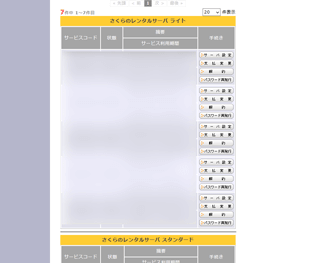

さくらインターネットのレンタルサーバー
さくらインターネットはデータセンター運営の業界大手で、個人向けの格安レンタルサーバーとして人気があります。（※東証１部上場：3778）
2018年の北海道地震の際には、停電状態のなか多くのサーバーを収容する石狩データセンターが非常用電源で乗り切ったことでも話題になりました。
さくらインターネットには月額換算131円の「ライトプラン」がありますが、当サイトでご紹介しているようなホームページ形式で作成する場合には費用を抑えて作ることができます。無料ホームページスペースからステップアップされる方は、さくらの「ライトプラン」を選択されるとよいでしょう。
一般的な月額100円程度のレンタルサーバーの場合、サイトの表示が重かったり、海外製の管理画面で使いづらいことも多いですが、さくらインターネットはオリジナルの管理画面のため初心者の方でも使いやすいです。
また、無料独自SSLの「Let's Encrypt」やマルチドメインにも対応しており、1996年からの長い運営実績もあるため、安心して利用することができます。
さくらの料金プラン「ライト」と「スタンダード」を比較
さくらの料金プランには、「ライト」や「スタンダード」、「プレミアム」など６つの料金プランがあります。
■ライトプラン
（データベース不要のホームページ作成に最適）
年間一括払いのみ：1,571円（※月額換算131円）
初期費用：1,048円
マルチドメイン数：20個
MySQL：×
月額換算131円で最安の「ライトプラン」では、WordPressの設置に必要なデータベースの利用はできません。けれども、当サイトでご紹介しているような静的なHTMLサイトでホームページを作成する場合、データベースの必要はないため、「ライトプラン」でも十分に機能するはずです。
「ライトプラン」では年間一括払いにしか対応していないものの、月額に換算すると131円で利用することができます。
■スタンダードプラン
（WordPressなどのCMSに最適）
月額：524円
年間一括：5,238円
初期費用1,048円
マルチドメイン数：200個
MySQL：50個
一方、データベースが必要なWordPressなどのCMSでホームページを作成する場合、「スタンダードプラン」以上を選択されるとよいでしょう。
最近、こちらの「スタンダードプラン」については、CPUやメモリなどのハードウェア増強が行われており、CMSやサイト表示の高速化の取り組みがされています。
当サイト運営者はライトプランで「５個」、スタンダードプランで「２個」契約していますが、最近の2019年に契約したスタンダードプランについては、以前のものと比べて「メモリ18GB → 48GB」へと増強されているようでした。

また、モリサワのWebフォントの機能はライトプランでは利用できませんが、こちらのスタンダードプランでは利用することができます。２週間無料のお試し期間があるため、実際に利用して試してみるとよいでしょう。
さくらサーバーの使用感をレビュー
当ホームページは、以前にYahoo!ジオシティーズからさくらインターネットの「スタンダード」へと引越してきまして、現在は少人数制のsixcoreにて設置していますが、こちらのさくらサーバーはファイルマネージャーの編集画面が大きくて使いやすかったです。
■表示速度も快適
2009年にYahoo!ジオシティーズからさくらインターネットに引越してきた際、表示スピードがはやくなり、快適に表示されるようになりました。
上がYahoo!ジオシティーズで公開していたときの表示速度、下が「さくらのスタンダード」に引っ越してからのデータですが、以前までは平均２秒程度かかっていたものが、平均１秒程度になるまで改善しています。
また、最近はハードウェアの増強がされたようなので、さらに快適になっているはずです。
■無料の独自SSLに対応
さくらでは無料独自SSLの「Let's Encrypt」にも対応しています。ヘルプページには常時SSL化する際の「.htaccess」の記述方法なども掲載されていて分かりやすかったです。
ただし、さくらでドメインを取得する際の料金については少し高めの印象があります。他社で格安ドメインを取得してさくらに設定して使うのもよいかもしれません。
■アクセスログ解析「Webalizer」
アクセスログの閲覧については、ログを「残す」に設定したのち、「Webalizer」で解析することができます。ただし、ドメインごとのアクセス数の把握ができないため、複数のドメインを設定している場合は不便かもしれません。

ドメインごとにアクセス解析をする場合、「Webalizer」の代わりに、「AWstats」を自分でインストールするのがよいと思いますが、ログファイルもドメインごとではないため、他のサーバーと比較するとインストールするのが少し難しいように感じました。
アクセス解析については、Google Analyticsなどを使用することをおすすめします。
■付属のさくらのブログ
以前までは付属ツールの「さくらのブログ」も利用できましたが、こちらは2021年3月2日をもって新規アカウントの受付が終了となりました。
→ さくらのブログからの引越方法
ブログを設置して更新する場合、スタンダードプラン以上を契約して、WordPressやMovableTypeなどをインストールすることをおすすめします。
個人向け格安レンタルサーバー
- エックスサーバー （高機能・人気・おすすめ・無料SSL）
- さくらインターネット （格安・人気・老舗・無料SSL）
- お名前.comサーバー （GMOグループ・人気・無料SSL）
- ロリポップ！ （初心者向け・人気・格安・無料SSL）
- コアサーバー （高機能・上級者向け・無料SSL）
- ヘテムル （無料SSL）
- スターサーバー （格安・無料SSL）
- XREA （格安・老舗・無料SSL）
- グーペ （お店向け・無料SSL）
- ConoHa WING（コノハ ウィング） （高速・無料SSL）
- mixhost （LiteSpeed・成人向け可・無料SSL）
- カラフルボックス （LiteSpeed・cPanel・無料SSL）
- WebARENA（ウェブアリーナ） （格安・老舗・無料SSL）
- Z.comレンタルサーバー （高速・格安SSL）
- リトルサーバー （格安・無料SSL）
- ABLENET（エイブルネット） （格安・老舗）
- エクストリム （格安・無料SSL）
- JSNレンタルサーバー （格安・老舗・無料SSL）
- Fc2 lite （格安・無料SSL）
- マイサーバー1000 （無料SSL）
- クイッカ （IP分散・cPanel）
- ドメインキング （Plesk）
- ＠ＷＡＰＰＹ （格安・Plesk）
- ハッスル （格安）